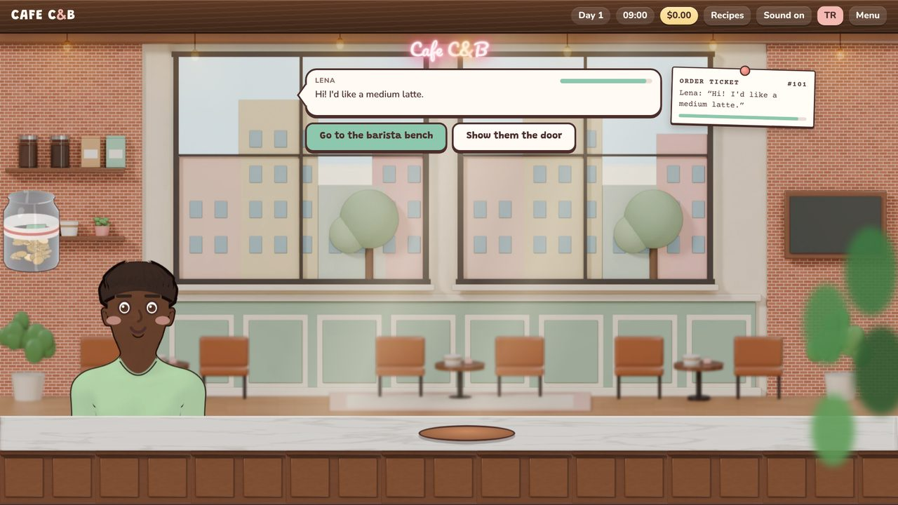

CAFE C&B
Devam ediyorIn progressTürkçe/İngilizce sürükle-bırak barista simülatörü. Müşteri siparişini verir; sen tezgâha geçip kahveyi öğütür, espresso çeker, sütü buharlaştırır ve fincanı müşteriye servis edersin. Kazandığın parayla cappuccino, flat white, mocha gibi yeni tarifleri açar, kafeni geliştirirsin. İlk sipariş, baş barista Ülkü ile kısa bir eğitim olarak gelir. Telefonda ve çevrimdışı oynanabilir.
A Turkish/English drag-and-drop barista simulator. A customer places an order; you head to the bench, grind the coffee, pull espresso, steam milk and serve the cup. Use the money you earn to unlock new recipes like cappuccino, flat white and mocha and upgrade your café. Your first order is a short tutorial with head barista Jesica. Playable on phones and offline.